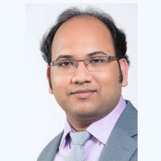

Sohon Roy

Summary
I am a software engineer with experience across both industry and academia. After spending last 9 years in the academia doing research in Software Engineering, now I wish to switch back to the industry.
Work Experience
Researcher in Software Engineering - Delft University of Technology
Delft, The Netherlands
January-2014 to April-2023
Objective: Empirically assessing the effectiveness of Metadata Extraction, Software Testing Practices, Regression Fault Detection, Mutation Testing, and Static Analysis in the context of spreadsheets and VBA programs.
- Conceiving cutting-edge ideas and Implementing them into PoCs and prototypes
- Software development (C#, .NET, JavaScript, Angular, SQL Server, Visual Studio, GitHub)
- Contributed to .NET based commercial web application PerfectXL
- Conducting Qualitative and Mixed-Methods Research
- Publishing results in top tier peer-reviewed IEEE and ACM conferences
Functional Analyst Intern - Air Liquide
Paris, France
April-2012 to October-2012
INVOICE DEMATERIALIZATION
Objective: Preliminary study for change management - Replacing paper invoicing with electronic invoicing.
- Applied systems engineering principles and methodology
- Identified stakeholders and their needs
Developer Intern - Air Liquide
Paris, France
April-2011 to July-2011
SALES CHANNEL ALLOCATION TOOL
Objective: Design and development of a software application for optimizing profit in gas cylinder distribution network.
- Analyzed requirements
- Designed a web application
- Developed the web application prototype (full stack JEE implementation)
Software Engineer - Infosys Technologies Ltd
Pune, India
June-2008 to December-2009
FINACLE CRM - LOAN ORIGINATION SYSTEM
Objective: Maintenance and development of loan origination module of the Finacle CRM product.
- Software development in Java, JavaScript, HTML, SQL, XML-XSLT (JEE web application)
- Prepared low level design documents and PoCs
- Located and fixed bugs in code
Education
Ecole Polytechnique, France - Master of Science (MSc) in Computer Science
2010 - 2012
West Bengal University of Technology - Bachelor of Technology (BTech) in Electronics and Communication Engineering
2004 - 2008
Skills
Developer Skills
- HTML, CSS
- JavaScript
- C#, .NET
- SQL
General Skills
- Problem Solving
- Writing
- Presenting
- Communication
- Teamworking
- Taking Initiative
- Mentoring
Other
Hobbies Contact Me